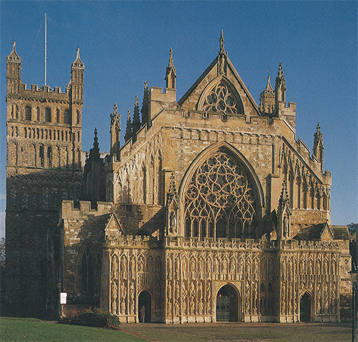
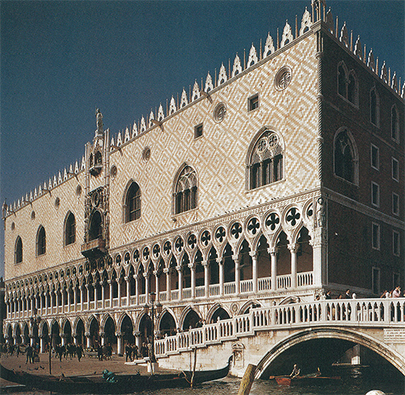
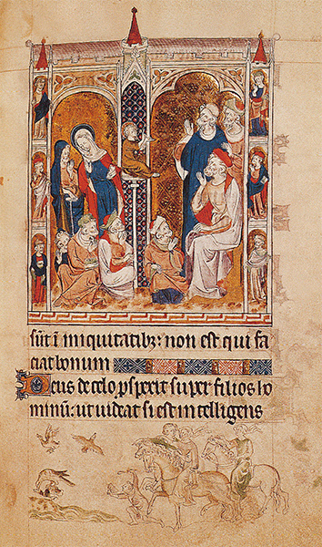
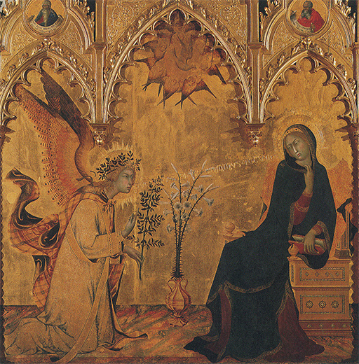
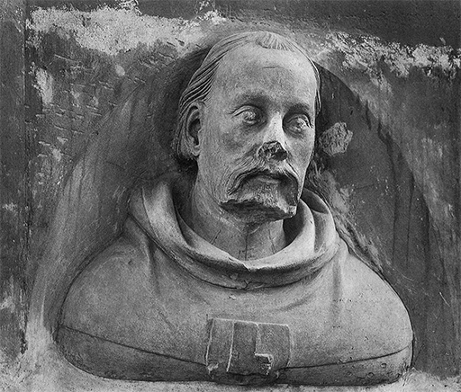
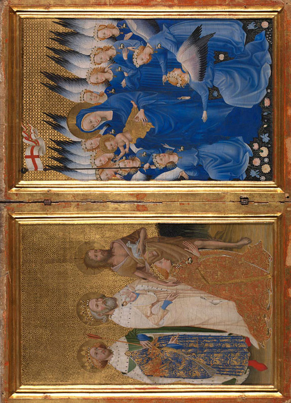
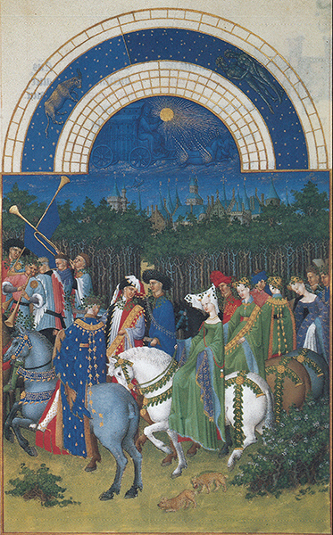
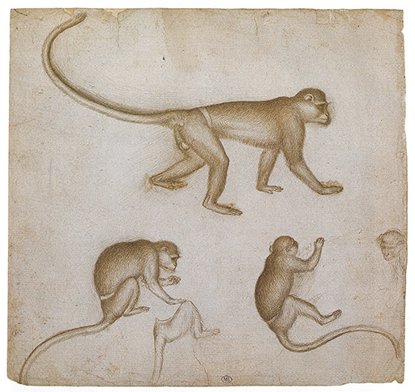
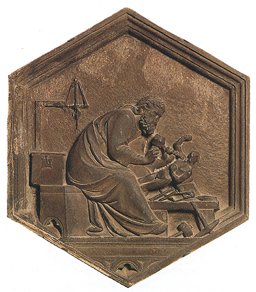

CORTESANOS Y BURGUESES
El siglo XIV
El XIII fue el siglo de las grandes catedrales, en las que intervinieron casi todas las ramas del arte. La labor originada por estas ingentes empresas prosiguió en el siglo XIV y aun después, pero entonces ya no constituyeron las catedrales el principal foco artístico. Debemos recordar que el mundo cambió en gran medida durante aquel período. A mediados del siglo XII, cuando empezó a desarrollarse el estilo gótico, Europa era todavía un continente de labradores poco poblado, con monasterios y castillos feudales como centros principales de poder y cultura. La ambición de las grandes sedes episcopales de poseer grandes catedrales propias fue la primera señal de un despertar del orgullo cívico de las ciudades. Ciento cincuenta años después, esas ciudades se convirtieron en fecundos centros de comercio y sus burgueses se fueron independizando cada vez más del poder de la iglesia y de los nobles. Los propios señores no vivieron ya pertinazmente aislados en sus dominios, sino que se trasladaron a las ciudades, con su comodidad y lujo, para exhibir su opulencia en las cortes de los poderosos. Podemos darnos una vívida idea de lo que fue la vida en el siglo XIV si leemos las obras de Chaucer, con sus caballeros y escuderos, sus frailes y artesanos. Ya no era el mundo de las cruzadas y de aquellos dechados de la caballería que evocamos al contemplar a los fundadores de Naumburgo (ilustración 130). Nunca se halla libre de errores generalizar demasiado acerca de épocas y estilos. Siempre existen ejemplos y excepciones que no encajarían en generalizaciones semejantes. Pero con esta salvedad, podemos decir que el gusto del siglo XIV tendió más a lo refinado que a lo grandioso.
En la arquitectura de esta época hallamos el ejemplo. En Inglaterra distinguimos el estilo gótico puro de las primeras catedrales, que es conocido como primitivo inglés, del desarrollo posterior de esas formas denominado estilo ornamental. El nombre indica el cambio de gusto. Los arquitectos góticos del siglo XIV ya no se daban por satisfechos con la nítida y majestuosa silueta de las primeras catedrales. Preferían exhibir su habilidad por medio de la ornamentación y las tracerías complicadas. La fachada de la catedral de Exeter es un ejemplo típico de este estilo (ilustración 137).

137 Fachada oeste de la catedral de Exeter, h. 1350-1400. Estilo ornamental.
La erección de iglesias ya no constituía la principal tarea de los arquitectos. En las ciudades que crecían y prosperaban tenían que planearse muchos edificios particulares o profanos, como casas consistoriales, casas gremiales, colegios, palacios, puentes y puertas de acceso a la ciudad. Uno de los edificios más famosos y característicos de esta clase es el Palacio Ducal de Venecia (ilustración 138), que se comenzó en el siglo XIV, cuando se hallaban en su cúspide el poderío y la riqueza de la ciudad. Puede observarse en él que este posterior desarrollo del estilo gótico, con su complacencia en ornamentos y tracería, también podía conseguir efectos de grandiosidad distintiva.

138 Palacio Ducal, Venecia, iniciado en 1309.
139 La Virgen y el Cristo niño, h. 1324-1339. Consagrado por Joan de Evreux en 1339; plata dorada, esmalte y piedras preciosas; 69 cm de altura; Museo del Louvre, París.
Las obras escultóricas más características del siglo XIV no son quizá las ejecutadas en piedra, que se realizaron en gran número para las iglesias de la época, sino más bien las de escaso tamaño en metal o marfil, en cuya creación sobresalieron los artistas de entonces. La ilustración 139 muestra una estatuilla de plata de la Virgen realizada por un orfebre francés. Obras de esta clase no se destinaban al culto público, sino que se acostumbraba instalarse en los oratorios de los palacios para el culto privado. No se proponen proclamar una verdad solemnemente desde lejos, como las estatuas de las grandes catedrales, sino incitar al amor y la ternura. El orfebre de París consideraba a la Virgen como una madre real, y al Cristo como un niño de verdad acariciando el rostro de aquélla con la mano. Procuró evitar cualquier impresión de rigidez, y por ello imprimió a la figura de la Virgen una ligera ondulación, haciendo que apoyara el brazo sobre la cadera para sostener al niño en tanto inclinara el rostro hacia él. De este modo, el conjunto del cuerpo parece cimbrar delicadamente, tendiendo a la forma de una S, tema al que fueron muy aficionados los escultores góticos. En efecto, el artista que realizó esta estatua no inventó probablemente una nueva actitud peculiar de la Virgen, ni tampoco el tema del niño jugando con ella; al hacerlo así no hacía más que seguir la orientación de la moda. Su aportación personal reside en el acabamiento de cada detalle, en la belleza de las manos, en las pequeñas arrugas que se forman en los brazos del infante, en el esmaltado y plateado maravillosos de la superficie, y, por último, y no menos importante, en las exactas proporciones de la estatua, con su graciosa cabecita sobre el cuerpo esbelto y flexible. No hay nada casual en estas obras de los artistas góticos. Detalles como los ropajes cayendo sobre el brazo rígido revelan el cuidado extremado del escultor para componerlos de acuerdo con líneas delicadas y melodiosas. Nunca podremos hacer la justicia debida a estas estatuas si pasamos apresuradamente ante ellas en nuestros museos, sin dedicarles más que una ojeada. Se hicieron para ser apreciadas por verdaderos conocedores y para ser atesoradas como piezas valiosas del culto.
La afición de los pintores del siglo XIV a los pormenores graciosos y delicados se advierte en manuscritos ilustrados tan famosos como el salterio inglés conocido por el nombre de Salterio de la reina María. La ilustración 140 muestra al Cristo en el Templo conversando con los doctores. Estos le han colocado sobre un elevado sitial, donde se le ve explicando algún punto de doctrina con el ademán característico empleado por los artistas medievales cuando deseaban representar a un maestro. Los escribas judíos levantan sus manos en actitud de confusión y asombro, lo mismo que los padres del Cristo, que acaban de ingresar en escena y se miran maravillados entre sí. El método de expresar el tema sigue careciendo de realidad. Evidentemente, el artista aún no conocía el descubrimiento de Giotto acerca de cómo debía ser tratada una escena para hacerla vivir. El Cristo, que por entonces tenía doce años según nos dice la Biblia, es excesivamente pequeño en comparación con los doctores, y no hay ningún propósito por parte del artista de darnos una idea del espacio que existe entre las figuras. Además, podemos ver que todos los rostros están más o menos dibujados según una fórmula sencilla: las cejas fruncidas, la boca hacia abajo y los cabellos de las cabezas y de las barbas rizados. Lo sorprendente es mirar a la parte inferior de la página y ver que se ha añadido otra escena que no tiene nada que ver con el texto sagrado. Es un tema extraído de la vida cotidiana en aquella época: una cacería de patos con halcón. Para deleite del hombre y las mujeres a caballo, y del muchacho que se halla a pie delante de ellos, el halcón acaba de coger un pato mientras vuelan en huida otros dos. El artista pudo no estar mirando a un muchacho de doce años cuando pintó la escena de la parte superior, pero, indudablemente, observó halcones y patos de verdad cuando pintó esta otra. Tal vez sentía demasiado respeto hacia la narración bíblica como para introducir en ella sus observaciones de la vida real. Prefirió mantener separadas ambas cosas: la clara manera simbólica de expresar un tema con ademanes fácilmente asequibles, sin pormenores que distrajeran al lector, y, en el margen inferior de la página, el tema extraído de la vida real, que nos recuerda otra vez que pertenece al siglo de Chaucer. Sólo en el transcurso del siglo XIV empezaron a fundirse gradualmente los dos elementos de este arte: la representación graciosa y la observación fidedigna. Lo que tal vez no hubiera acontecido sin el influjo del arte italiano.

140 El Cristo en el Templo; una cacería con halcón, h. 1310. Página del Salterio de la reina María; Biblioteca Británica, Londres.
En Italia, particularmente en Florencia, el arte de Giotto cambió totalmente la idea de la pintura. La vieja manera bizantina pareció de pronto trasnochada y rígida. Sin embargo, sería equivocado imaginar que el arte italiano se apartó inopinadamente del resto de Europa. Por el contrario, las ideas de Giotto influyeron en los países de más allá de los Alpes, mientras que los ideales de los pintores góticos del norte comenzaron también a producir sus efectos en los maestros del sur. Fue particularmente en Siena, otra ciudad toscana y gran rival de Florencia, donde el gusto y la moda de esos pintores nórdicos causaron profunda impresión. Los pintores sieneses no habían roto con la primitiva tradición bizantina de modo tan tajante y revolucionario como Giotto en Florencia. Su gran maestro de la generación de Giotto, Duccio (h. 1255/1260-h. 1315/1318), trató —y con éxito— de infundir nueva vida a las viejas formas bizantinas en lugar de dejarlas de lado en su totalidad. El retablo de la ilustración 141 fue realizado por dos maestros más jóvenes de su escuela, Simone Martini (1285?-1344) y Lippo Memmi (†1347?). Este retablo revela hasta qué punto los ideales y la atmósfera general del siglo XIV habían sido asimilados por el arte sienés. Representa la anunciación, el momento en que el arcángel san Gabriel llega del cielo para dirigir su salutación a la Virgen, con las palabras que se hallan escritas como saliéndole de la boca: Ave María, gratia plena. En su mano izquierda sostiene una rama de olivo, símbolo de la paz; su derecha está levantada como si el arcángel estuviera a punto de hablar. La Virgen había estado leyendo y fue sorprendida por la aparición del ángel. Retrocede en un movimiento de humildad y confusión, a la par que se vuelve para ver al mensajero celestial. Entre los dos hay un jarrón de blancos lirios, símbolo de la virginidad, y en la parte alta del arco central puntiagudo vemos la paloma que representa al Espíritu Santo, rodeada de cuatro querubines de cuatro alas. Estos maestros compartieron la predilección de los artistas franceses e ingleses de las ilustraciones 139 y 140 por las formas delicadas y la expresión lírica. Se deleitaban en las curvas graciosas de los flotantes ropajes y en la sutil donosura de los cuerpos alargados. Todo este retablo, en efecto, parece como una preciosa obra de orfebrería, con sus figuras destacando sobre fondo de oro, tan hábilmente distribuidas que forman una estructura admirable. No nos cansamos de admirar de qué modo han sido encajadas esas imágenes dentro de la complicada forma del retablo; cómo se han enmarcado las alas del arcángel con el arco apuntado de la izquierda y cómo retrocede la figura de la Virgen para quedar cobijada por el arco de la derecha, mientras el espacio vacío entre ellos ha sido llenado con el jarrón y la paloma que está encima de él. Los pintores aprendieron de la tradición medieval este arte de situar los personajes dentro de una estructura. Anteriormente tuvimos ocasión de admirar de qué manera los artistas medievales colocaron los símbolos de los temas sacros para conseguir formar un esquema satisfactorio. Pero sabemos que procedieron así por ignorancia de las formas y las proporciones reales de las cosas y porque prescindían de cuanto se refiriese al espacio. Los artistas sieneses ya no actuaban de este modo. Tal vez encontremos un tanto extrañas sus figuras, con sus ojos inclinados y sus bocas curvadas; pero no necesitamos más que observar algunos detalles para ver que lo realizado por Giotto en modo alguno se había perdido para ellos. El jarrón es un jarrón auténtico, colocado sobre un suelo de verdad también, y podemos decir con exactitud dónde se halla, en relación con el ángel y con la Virgen. El escabel en el que está sentada la Virgen es un escabel real, retrocediendo en profundidad, y el libro que sostiene María no es un símbolo, sino un verdadero libro de oraciones con la luz cayendo sobre él y con sombra entre las páginas, que el artista debió haber estudiado tomando como modelo un libro de oraciones que tuviera en su taller.

141 Simone Martini y Lippo Memmi, La anunciación, 1333. Parte de un altar hecho para la catedral de Siena; temple sobre tabla; Galería de los Uffizi, Florencia.
Giotto fue contemporáneo del gran poeta florentino Dante Alighieri, quien le menciona en Divina comedia. Simone Martini, uno de los maestros de la ilustración 141, fue amigo de Petrarca, el más grande poeta italiano de la generación siguiente. La fama de Petrarca se mantiene hoy principalmente por los muchos sonetos amorosos que escribió para Laura. Sabemos por ellos que Simone Martini pintó un retrato de Laura que fue atesorado por el poeta. Esto no nos parecería asombroso si no recordásemos que los retratos, tal como son entendidos por nosotros, no existían en el medievo. Pensemos que los artistas se contentaban con servirse de figuras convencionales de hombre o de mujer y con escribir sobre ellos los nombres de las personas que se proponían representar. Desgraciadamente, el retrato de Laura realizado por Simone Martini se ha perdido, y no podemos saber hasta qué punto guardaba parecido con ella. Sin embargo, sabemos que éste y otros maestros del siglo XIV pintaron del natural y que el arte del retrato se desarrolló durante esta época. Tal vez no sería ajeno a ello la manera en que Simone Martini miraba la naturaleza y observaba los detalles, pues los artistas europeos tuvieron numerosas oportunidades de aprender de sus logros. Como el propio Petrarca, Simone Martini pasó muchos años en la corte del Papa, que no se hallaba entonces en Roma sino en Aviñón. Francia era todavía el centro de Europa, y las ideas y estilos franceses ejercían gran influjo en todas partes. Alemania estaba gobernada por una familia de Luxemburgo que poseía su residencia en Praga. En la catedral de esta ciudad existe una maravillosa serie de bustos que datan de esta época (entre 1379 y 1386); representan a los protectores de la iglesia y obedecen a análogo motivo que las figuras de los fundadores de Naumburgo (ilustración 130). Pero aquí ya no hay que dudar: son verdaderos retratos. La serie comprende bustos de contemporáneos, incluyendo uno del propio artista, Peter Parler el Joven que, con toda probabilidad, es el primer autorretrato verdadero de un artista que conocemos (ilustración 142).

142 Peter Parler el Joven, Autorretrato, 1379-1386. Catedral de Praga.
Bohemia se convirtió en uno de los centros a través de los cuales se expandió más ampliamente este influjo de Italia y Francia. Sus contactos llegaron hasta Inglaterra, donde Ricardo II estaba casado con Ana de Bohemia. Inglaterra comerciaba con Borgoña. Europa, o al menos la Europa de la Iglesia latina, era aún una vasta unidad. Las ideas y los artistas viajaban de un centro a otro, y nadie rechazaba un producto cualquiera porque fuera «extranjero». El estilo que se desarrolló de este mutuo intercambio hacia finales del siglo XIV es conocido entre los historiadores con el nombre de estilo internacional. Un ejemplo maravilloso de él en Inglaterra, posiblemente pintado por un maestro francés para un rey inglés, es el llamado Díptico de Wilton (ilustración 143). Es interesante para nosotros por varias razones, incluyendo el hecho de que también recuerda los rasgos de un personaje histórico real, que no es otro que el infortunado esposo de Ana de Bohemia, el rey Ricardo II. Éste figura pintado rezando arrodillado mientras san Juan Bautista y dos santos patrones de la familia real interceden por él ante la Virgen, que parece estar en un florido prado del Paraíso, rodeada de arcángeles de una belleza radiante, quienes portan el distintivo del rey, el venado blanco de cuernos dorados. El Cristo niño se inclina hacia el rey como si le bendijera o le diera la bienvenida y asegurara que sus plegarias han hallado respuesta. Tal vez algo de la antigua actitud mágica respecto a las imágenes sobrevivía aún en la costumbre de los retratos de donantes para evidenciarnos la tenacidad de esas creencias que hemos hallado en la propia cuna del arte. Quién sabe si el donante no se sentía más seguro en los altibajos de la vida, en la cual su intervención no siempre sería muy santa, al saber que en alguna iglesia o capilla apacible habría algo de él, una imagen suya allí fijada mediante la destreza del artista, que le ponía siempre en compañía de santos y ángeles no cesando nunca de orar.

143 Díptico de Wilton: San Juan Bautista, san Eduardo el Confesor y san Edmundo encomiendan a Ricardo II al Cristo, h. 1395. Temple sobre tabla; cada sección mide 47,5 x 29,2 cm; National Gallery, Londres.
Puede observarse fácilmente que el arte del Díptico de Wilton se halla en relación con las obras de que hemos tratado anteriormente, compartiendo con ellas el gusto por las líneas suaves y los temas exquisitos y delicados. La manera de coger la Virgen el pie del Cristo niño, y las actitudes de los ángeles, con sus manos finas y alargadas, nos recuerdan figuras que hemos visto realizadas anteriormente. Una vez más observamos cómo el artista ha demostrado su habilidad en los escorzos, por ejemplo en la postura del ángel arrodillado en la parte izquierda del retablo, y de qué modo se ha deleitado realizando estudios del natural en las muchas flores que adornan su paraíso imaginario.
Los artistas del estilo internacional hicieron uso de la misma fuerza de observación y de la misma complacencia por las cosas bellas y delicadas en la representación gráfica del mundo que tenían a su alrededor. Fue costumbre en el medievo ilustrar calendarios con pinturas de las diversas ocupaciones, según los meses: la siembra, la caza, la recolección. Un calendario perteneciente a un libro de oraciones, encargado por un rico duque borgoñón al taller de los hermanos De Limburgo (ilustración 144), muestra cuánto habían ganado estas pinturas de la vida real en observación y naturalismo, incluso desde la época del Salterio de la reina María de la ilustración 140. La miniatura representa la fiesta anual de la primavera entre los cortesanos. Éstos marchan a caballo a través de un bosque, alegremente ataviados y con guirnaldas de hojas y flores. Podemos observar cómo se complació el artista en el espectáculo de las lindas muchachas elegantemente vestidas, y cómo se deleitó trayendo a esta página tanta pompa y colorido. Una vez más recordamos a Chaucer y sus peregrinos, pues nuestro artista se esforzó también en distinguir los diferentes tipos, y lo hizo tan hábilmente que casi nos parece oírles hablar. Una tal pintura posiblemente fue ejecutada con ayuda de una lente de aumento, y debiéramos mirarla de análoga manera. Todos los detalles que ha acumulado el artista en esta página se combinan para formar un cuadro que casi parece una escena de la vida real. Casi, pero no del todo, pues cuando advertimos que el artista ha cerrado el fondo con una especie de cortina de árboles, más allá de los cuales vemos los tejados puntiagudos de un gran castillo, nos damos cuenta de que lo que nos ofrece no es una escena extraída realmente del natural. Su arte parece tan alejado del simbolismo expresivo de los pintores primitivos que hace falta esforzarse para darse cuenta de que ni siquiera él pudo representar el espacio en el que se mueven las figuras, y que consigue la ilusión de realidad principalmente por fijar su atención en los detalles. Sus árboles no son árboles de verdad pintados frente a la naturaleza, sino más bien hileras de árboles simbólicos, uno junto al otro; y hasta sus rostros humanos se desenvuelven aún, más o menos, según una fórmula deliciosa. Sin embargo, su interés por todo el esplendor y la alegría de la vida real en torno revela que sus ideas acerca de los fines de la pintura eran muy diferentes de las de aquellos artistas del primitivo medievo.

144 Paul y Jean de Limburgo, Mayo, h. 1410. Página de Las muy ricas horas del duque de Berry, pintado para el duque de Berry; Museo Condé, Chantilly.
El interés ha evolucionado, gradualmente, de la mejor manera de plasmar un tema sacro tan clara y sugestivamente como fuera posible a los métodos de representar un aspecto de la naturaleza de la manera más fiel. Hemos visto que los dos ideales no chocan entre sí. Ciertamente, fue posible poner este conocimiento de la naturaleza recientemente adquirido al servicio del arte religioso, como hicieron los maestros del siglo XIV, y como otros harían después de ellos; pero para el artista, la tarea, no obstante, había cambiado. Primeramente bastó con aprender la fórmula antigua de representar las figuras más importantes del tema religioso, y con aplicar este conocimiento a combinaciones siempre nuevas. Ahora, la tarea del artista incluía una habilidad diferente. Tenía que ser capaz de realizar estudios del natural y de trasladarlos a sus pinturas. Empezó a utilizar el cuaderno de apuntes y a acumular en él un conjunto de esbozos de plantas y animales raros y bellos. Lo que se hizo por excepción en el caso de Matthew Paris (ilustración 132) se convirtió de pronto en regla. Un dibujo como el de la ilustración 145, de autoría de Antonio Pisanello (1397-1455?), artista del norte de Italia, sólo veinte años posterior a la miniatura de los De Limburgo, revela cómo llevó esta costumbre de los artistas al estudio de la vida animal con apasionado interés. El público que contemplaba las obras de los artistas empezó a juzgarlas por la habilidad con que era reproducida en ellas la naturaleza, así como por el valor de los detalles atractivos que el artista acertaba a introducir en sus cuadros. Sin embargo, los artistas deseaban avanzar más. Ya no se contentaban con la maestría recientemente adquirida de pintar del natural detalles como flores y animales; querían explorar las leyes de la visión y adquirir el suficiente conocimiento del cuerpo humano para poder plasmarlo en sus estatuas y en sus pinturas, como hicieron los griegos. Al llegar el turno a este interés, el arte medieval tocó realmente a su fin, empezando el período conocido generalmente con el nombre de Renacimiento.

145 Antonio Pisanello, Apuntes de un mono, h. 1430. Página de un cuaderno de apuntes; punta de plata sobre papel, 20,6 x 21,7 cm; Museo del Louvre, París.

Andrea Pisano, Escultor trabajando, h. 1340. Relieve en mármol proveniente del campanile florentino; 100 cm de altura; Museo dell’Opera del Duomo, Florencia.